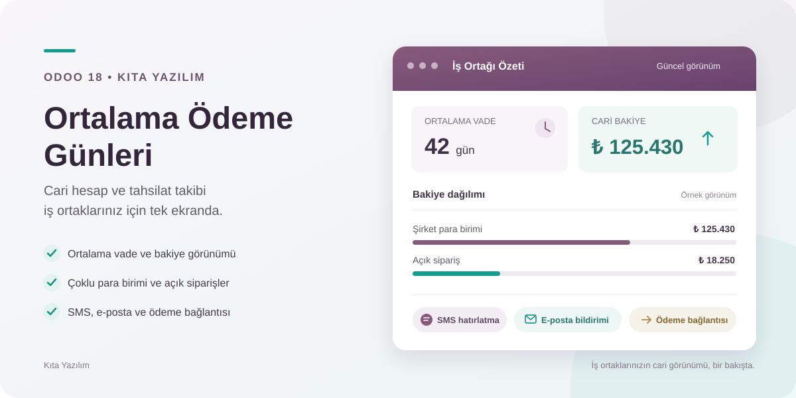
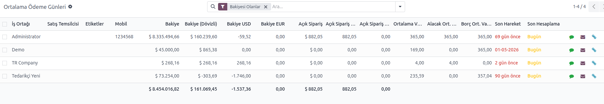
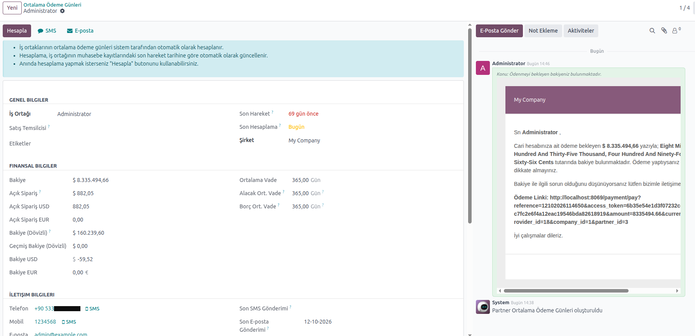

Müşteri ve tedarikçilerinizin cari bakiyelerini, ortalama vade göstergelerini, açık siparişlerini ve tahsilat iletişimini Odoo içinden takip edin.

Eklenti, seçili şirketin yayınlanmış muhasebe kayıtlarındaki alacak ve borç hesaplarını kullanır. Varsayılan hesaplama dönemi son 365 gündür; Muhasebe ayarlarından değiştirilebilir ve istenirse bir yevmiye hariç tutulabilir.
Gün değerleri, mevcut bakiye tutarını karşılayan muhasebe hareketlerinin tarihleri baz alınarak tutar ağırlıklı ortalama şeklinde hesaplanır. Hesaplama döneminde karşılığı bulunmayan bakiye için dönem başlangıcı esas alınır.
Önemli: Bu gösterge, tamamlanmış tahsilatların tek tek kaç günde yapıldığını değil, mevcut cari bakiyenin hareket tarihine göre yaşını ifade eder. Kayıtlar ve hesaplamalar zamanlanmış görevlerle günlük güncellenir; istenirse Hesapla düğmesiyle elle de yenilenebilir.
Bakiye, dövizli bakiye, açık sipariş tutarı ve ortalama gün bilgilerini aynı listede görüntüleyin. Müşteri, tedarikçi, bakiye veya satış temsilcisine göre filtreleyin; çok şirketli kullanımda şirket bazında takip edin.

Pozitif bakiyesi bulunan iş ortaklarına detay ekranından SMS veya e-posta hatırlatması gönderebilirsiniz. Gönderimler otomatik değildir. Aynı iş ortağına yeniden bildirim göndermek için bekleme süresi, SMS ve e-posta kanalı için ayrı ayrı ayarlanabilir; varsayılan süre 7 gündür.
Bakiye için PayTR ödeme bağlantısı oluşturabilirsiniz. Kullanmak için payment_paytr_kt eklentisinin kurulu ve PayTR sağlayıcısının Odoo'da yapılandırılmış olması gerekir.

Kıta Yazılım